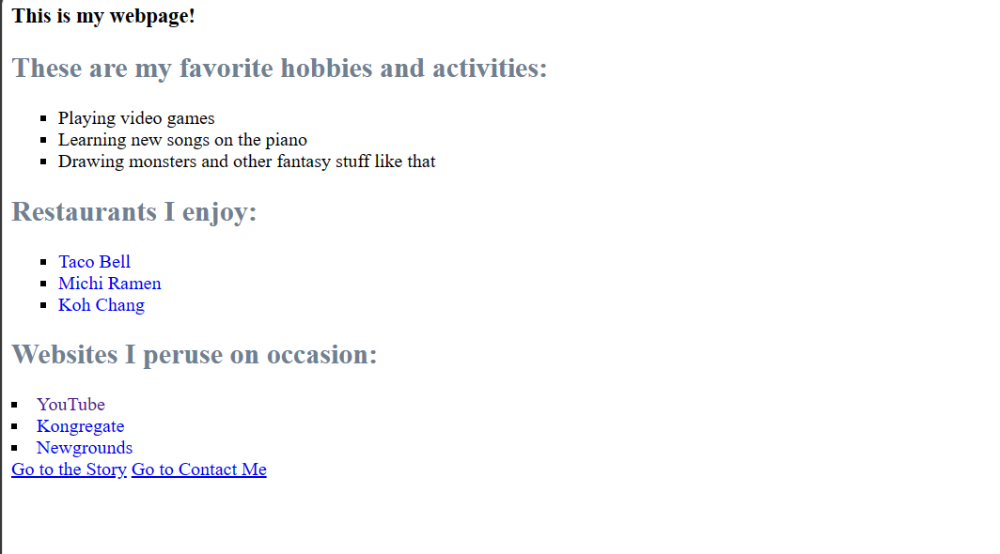

For this clump of weeks, we took our first look at actually making
our own websites. Our first goal was simply to make three basic pages:
the first being a simple 'About Me' page, the second being a short story,
and the third being a 'Contact Me' page.

Go to My First Website!
Go Back